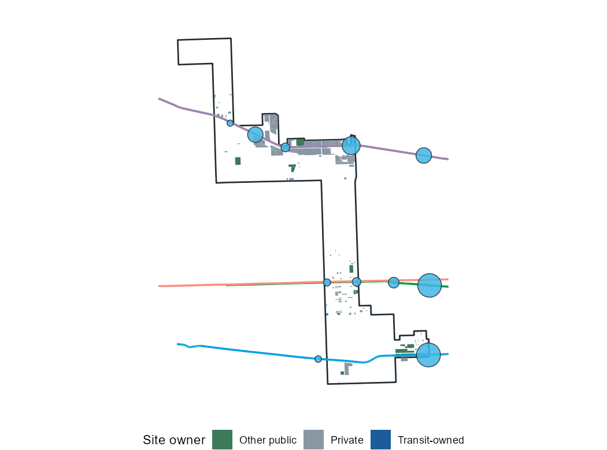

Stations in this ward: Austin (Green), Central (Green), Cicero (Blue), Galewood, Hanson Park, Mars, Mont Clare

| Build on open land first | 8,100 |
| What today's zoning allows | 2,200 |
| If fourplexes were legal near stations | 17,000 |
| If public land were offered | 2,600 |
| If transit agencies built on their land | 300 |
| Full build-out | 32,000 |
Which decisions unlock the most homes here
Capacity, not a forecast: homes that could fit under the stated density targets, rounded. Existing building sizes come from Cook County Assessor records where available and are estimated elsewhere. Prepared by Michael Dunst, October 2026. Full map and methods: https://mtdunst.github.io/Chicago-TOD/